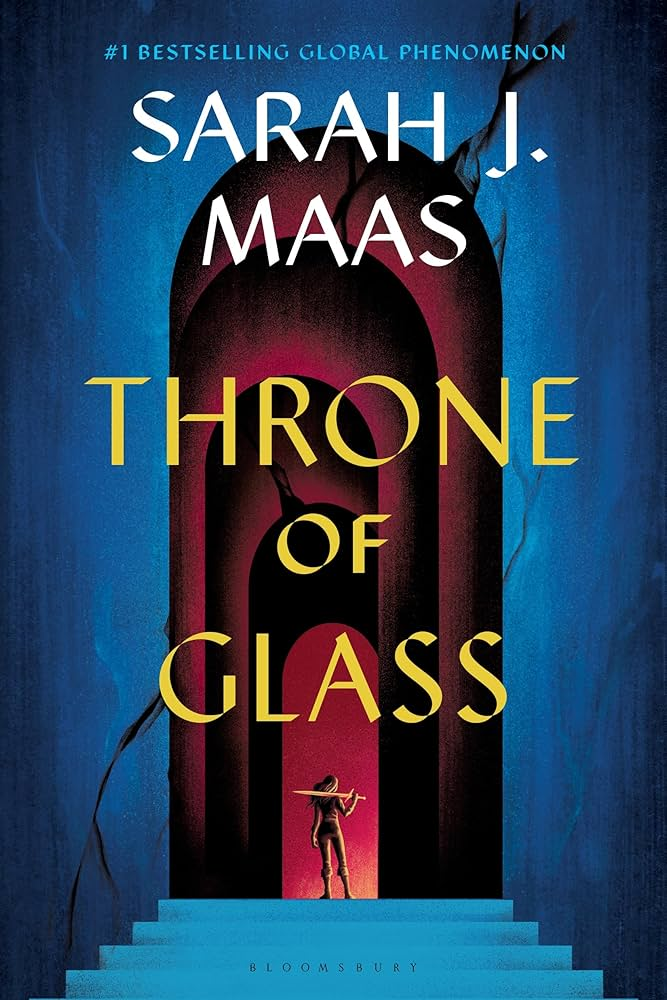
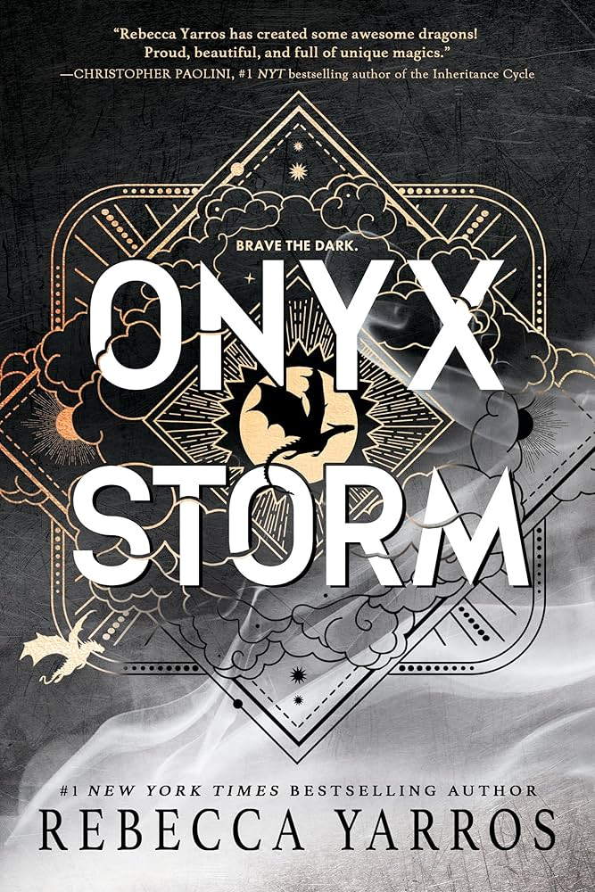
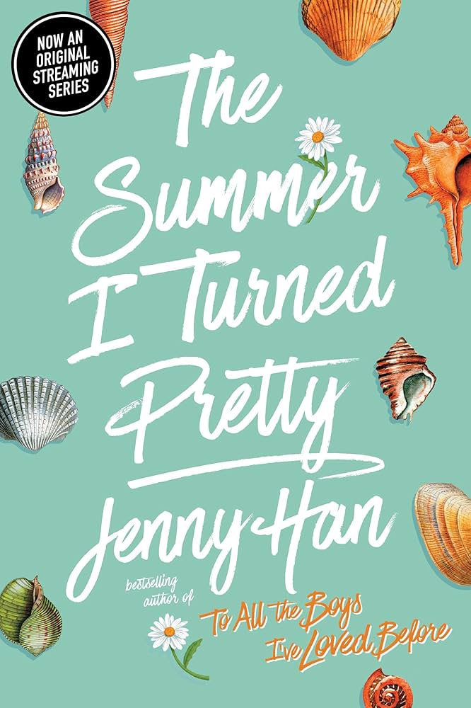

The Series Spiral
Example: Throne of Glass by Sarah J. Maas
This type of book becomes popular because readers get pulled into a long series and keep
posting rankings, reactions, and reading orders. Sarah J. Maas is a good example because her
books stay visible through fan discussions and series-based recommendations.

The Release Hype Book
Example: Onyx Storm by Rebecca Yarros
This type of book gets attention before and after release because readers are already invested
in the series. BookTok helps build anticipation through theories, reactions, countdowns, and reviews.
The Emotional Reaction Book
Example: Ugly Love by Colleen Hoover
This type of book spreads because readers have strong emotional reactions to it. Colleen Hoover’s
books work well online because people post about how the story made them feel, which makes other
readers curious.
The Plot Twist Thriller
Example: The Boyfriend by Freida McFadden
This type of book spreads because readers want to talk about the twists without spoiling them.
Thrillers work well on BookTok because people can quickly recommend them as shocking, fast-paced,
or hard to put down.
The Comfort Romance
Example: Book Lovers by Emily Henry
This type of book stays popular because it feels easy to recommend and fits into romance reading
trends. Emily Henry’s books work well online because readers like sharing favorite tropes, quotes,
and cozy romance recommendations.

The Adaptation Boost
Example: The Summer I Turned Pretty by Jenny Han
This type of book gets more attention when the story connects to a larger pop culture moment,
like a show or movie adaptation. Online fan communities help keep Jenny Han’s books visible
through edits, reactions, and discussions.